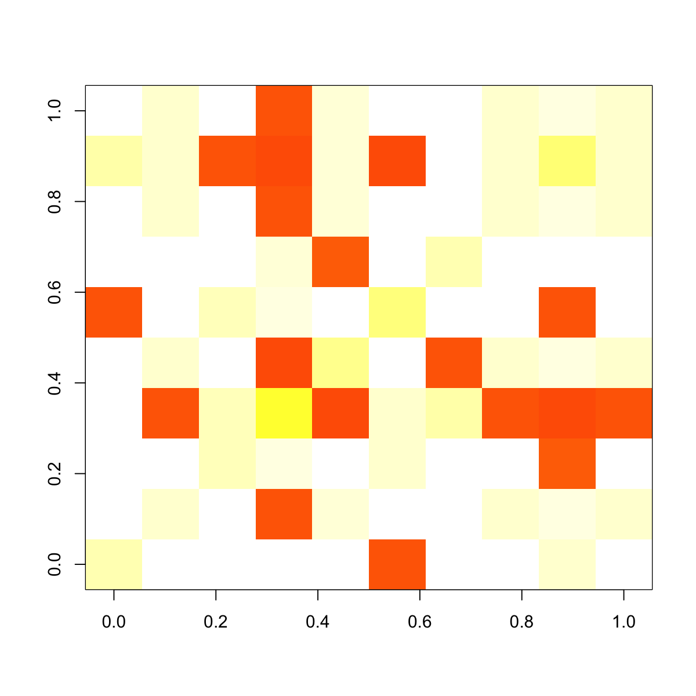

eRWR is supposed to implement Random Walk with
Restart (RWR) to pre-compute affinity matrix for for
nodes in the input graph with respect to the starting
node (loop over every node in the graph)
eRWR(g, normalise = c("laplacian", "row", "column", "none"), restart = 0.75)
PTmatrix: affinity matrix with the
dimension of n X n, where n is the number of nodes in the
input graph. Columns stand for starting nodes walking
from, and rows for ending nodes walking to. Therefore, a
column for a starting node represents a steady-state
affinity vector that the starting node will visit all the
ending nodes in the graph The input graph will treat as an unweighted graph if there is no 'weight' edge attribute assocaited
# 1) generate a random graph according to the ER model g <- erdos.renyi.game(100, 1/100) # 2) produce the induced subgraph only based on the nodes in query subg <- eGraphInduce(g, V(g), knn=0) # 3) calculate the affinity matrix PTmatrix <- eRWR(subg, normalise="laplacian", restart=0.75) # 4) visualise affinity matrix graphics::image(PTmatrix, col=visColormap("wyr")(64), zlim=c(0,1))
eGraphInduce
){kind=link}